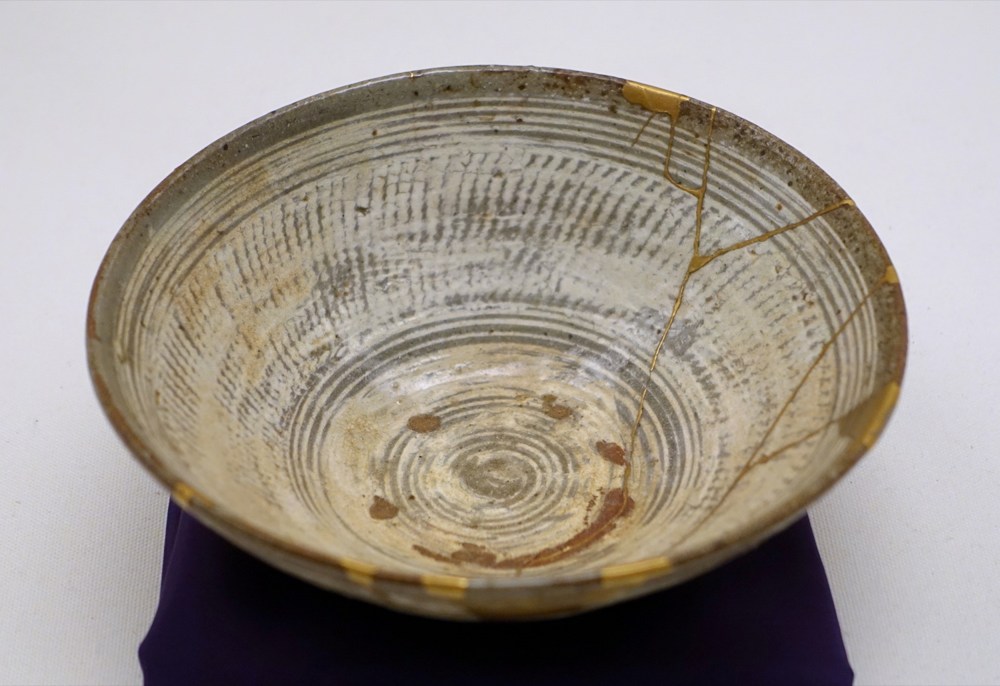

To be human is to be imperfect, and the imperfection is the way in, not the thing to fix. One historian found that idea hiding inside Alcoholics Anonymous, then found it nearly everywhere. He wrote it down as a book of stories.
The capstone of the series /seven tales, one idea/18 sources/ 20 min read
There is an old Japanese way of mending a broken bowl. You fill the cracks with gold. You do not hide the break, you trace it, in something more precious than the bowl was to begin with. The mended bowl is worth more than the unbroken one, and worth more because it broke.

Kintsugi: a 16th-century Korean tea bowl, broken and rejoined with gold. The repair is not disguised. It is the most valuable thing about it. (Joseon dynasty, Ethnologisches Museum, Berlin.)
That is close to the whole argument of the book this post is about. To be human is to be imperfect, and the cracks are not a problem to be fixed before the spiritual life can begin. The cracks are where it begins.
Ernest Kurtz was a Catholic priest who left the priesthood and took a doctorate in history at Harvard. His dissertation became the standard history of Alcoholics Anonymous, a book called Not-God. He spent years on a plain question: why does a program run by amateurs in church basements do what hospitals and clinics often cannot? The answer he kept circling was not medical. It was the same thing the desert monks knew, and the Hasidic rabbis, and the Zen teachers, and the Sufis. With the writer Katherine Ketcham he set it down as a book made almost entirely of stories, The Spirituality of Imperfection (1992). This is that book, distilled: the spine of it, the best of the tales, and the thread that runs from here back through everything else in this series.
It opens with a small story. A teacher finds his students arguing over a line from Lao Tzu, those who know do not speak, and those who speak do not know. He lets them go a while, then asks one question. Which of you knows the smell of a rose? Every hand goes up. Good, he says. Put it into words. And the room goes quiet, because not one of them can.
That is the book in a single move. The things that carry the most weight, you know by living them, not by getting them right out loud. You cannot be argued into the smell of a rose. Spirituality, the authors say, is like that, which is the first reason it reaches us as stories instead of doctrine.
To deny our errors is to deny ourself, for to be human is to be imperfect.Kurtz and Ketcham, The Spirituality of Imperfection
The diagnosis
What kills it is the demand to be perfect
Here is the claim that holds the rest together. The thing that wrecks a spiritual life is the demand to be perfect, and underneath that, the demand to be in control. To run the show. To be, in the word the book keeps coming back to, God.
Kurtz got there through alcoholics, because they show you the pattern at full volume. The drinker's deepest trouble, he argued, was never only the drink. It was a kind of grandiosity: the conviction that they could manage everything, including the one thing that was plainly managing them. The title of his AA history is the cure stated in two words. Not-God. The first message of the program, he wrote, is that its members are not infinite, not absolute, not God.
He once reduced the whole of it to a single word. Finitude. You are finite. You are not in charge of the weather, or the outcome, or other people, or, on a bad day, yourself. The drinking was one way of refusing that. So is a great deal of ordinary unhappiness that has nothing to do with drinking.
AA's own book says it flatly, in the chapter members have read aloud at the start of meetings for eighty years. Selfishness, self-centeredness! That, we think, is the root of our troubles. Not the alcohol. The self, curved in on itself, demanding to be first and to be right.
You do not fix that by trying harder, because trying harder is just the self going back to work. You loosen it, if loosen is the word, by admitting you cannot. The first of the twelve steps is not an accomplishment, it is a surrender: We admitted we were powerless. And the most the book ever promises is the opposite of perfection. We claim spiritual progress rather than spiritual perfection.
The evidence
The same thing, told seven ways
The book's method is its argument. If the deepest things arrive as stories, then you teach with stories, and you trust the reader to feel the point rather than be told it. Kurtz and Ketcham gathered more than a hundred, from people who never met, separated by oceans and centuries and languages. The strange thing is how they rhyme.
Here are seven, one from each of seven traditions. Read them in a row. Each is about a person running into the edge of themselves and finding that the edge is where the door is. Not one of them is making an argument. Together they make one anyway.
tap a tradition, or use the arrow keys
Taoism
The fragrance of a rose
A teacher came upon his students arguing over a line from Lao Tzu: those who know do not speak, and those who speak do not know. He listened a while, then asked them a question. Which of you knows the smell of a rose? Every one of them did. Then put it into words for me, he said. And not one of them could say anything at all.
The things that matter most, you know by living them, not by saying them. So they come to us as stories.
A Zen teaching tale, in the telling of the Jesuit Anthony de Mello, The Song of the Bird (1982). The framing line is Tao Te Ching, chapter 56.
Judaism
The two pockets
A rabbi taught that every person should walk around with a slip of paper in each pocket, and learn which one to reach for. In the right pocket, a note that reads: for my sake the world was created. In the left, one that reads: I am dust and ashes.
When you are crushed and certain you are nothing, you read the first. When you are puffed up and certain you are everything, you read the second. You are, at every moment, both at once.
You are precious beyond reckoning, and you are dust. Carry both, or you tip over.
Rabbi Simcha Bunim of Peshischa (1765 to 1827). The two lines are scripture: Mishnah, Sanhedrin 4:5, and Genesis 18:27.
Christianity
The leaking jug
In the desert, the monks called a council to judge a brother who had sinned, and sent for Abba Moses, the most respected among them. He would not come. When they sent again, he got up and walked to the meeting with an old jug full of water roped to his back, leaking the whole way, leaving a wet trail in the sand behind him.
They asked him what it meant. My own sins are running out behind me where I cannot see them, he said, and here I am, come to judge somebody else's. They said no more, and forgave the brother.
Your own faults trail behind you, out of your sight. Reason enough to go easy on everyone else's.
Abba Moses the Black, 4th-century Egypt. From the Sayings of the Desert Fathers (the Apophthegmata Patrum), under "Moses."
Zen
A cup of tea
A professor came to a Japanese master to ask about Zen, and spent the visit explaining what he already thought. The master served tea. He filled the professor's cup, and then kept pouring, until it ran over the brim and spread across the table.
The professor watched it puddle and finally cried out that the cup was full, no more would go in. The master set down the pot. Like this cup, he said, you are full of your own opinions. How can I show you Zen until you empty your cup?
You cannot be filled while you are already full. Come empty, or do not come.
Master Nan-in. The first of the "101 Zen Stories" in Paul Reps and Nyogen Senzaki, Zen Flesh, Zen Bones (1957).
Sufism
The key under the lamp
A neighbor finds the Mulla Nasrudin on his knees under a streetlamp, patting the ground. I have lost my key, says the Mulla, and the neighbor kneels to help. They search and search and find nothing.
At last the neighbor asks: are you sure you dropped it here? Oh, no, says Nasrudin, I dropped it inside the house. Then why are we looking out here? Because, says the Mulla, the light is so much better.
We hunt for the answer where it is comfortable to look, not where we actually lost it.
A tale of the Mulla Nasrudin, the holy fool of Sufi tradition, as collected by Idries Shah, The Exploits of the Incomparable Mulla Nasrudin (1966).
Buddhism
The mustard seed
A young mother went out of her mind when her baby died, and carried the body from house to house begging for medicine to bring him back. People thought she was mad, until someone sent her to the Buddha. He said yes, he could help, if she brought him a single mustard seed, just one, from any house where no one had ever died.
She went door to door. Every house had a seed to give her. Not one of them had been spared a death: a child, a husband, a mother, a friend. House by house it came clear to her. She stopped, and buried her son, and came back.
There is no house that grief has skipped. The thing you cannot carry is the thing every person is carrying.
Kisa Gotami, a disciple of the Buddha. From the commentary on the Dhammapada (verse 114), in E. W. Burlingame's Buddhist Legends (1921).
Recovery
We are not saints
This one is not a parable, it is a confession, printed in the book that millions of people have used to get sober. Right after it lays out its famous twelve steps, the program stops and admits something. Nobody actually does these perfectly.
We are not saints, it says. The point was never to become flawless. The most it asks is that you keep moving in the right direction, badly, daily. Progress, it says, not perfection.
Nobody graduates. There is no finished version of you on the way. That is the design, not the failure.
Alcoholics Anonymous (the "Big Book"), chapter 5, "How It Works" (1939). The book at the center of Kurtz's history.
The prescription
What grows once you stop
The last third of the book is a map of what shows up once the demand for perfection loosens. Not virtues you achieve by effort. More like things you stop standing in the way of. Six of them.
The six the book maps
1
Release
Letting go of the grip, especially on outcomes. The paradox the recovering drinker meets first: a kind of freedom arrives only after you admit you are not in charge.
2
Gratitude
Less a feeling than a way of seeing, one that notices nearly everything is a gift you did not earn. People who lack it, the book says, do not own their things. Their things own them.
3
Humility
Not thinking less of yourself, and not groveling. The book quotes a recovery counselor on the alcoholic's real distortion: not "I am special," not "I am worthless," but the knot of both, I am a very special worm. Humility is putting the worm down.
4
Tolerance
Room for difference, and for things left unresolved. The essence of tolerance, they write, lies in its openness to difference. It is the opposite of the cup too full to take anything in.
5
Forgiveness
Accepting the imperfection of other people, starting with the ones who made you. Less an erasing of the debt than a setting-down of it, so you no longer have to carry it.
6
Being-at-home
The quiet end of it: at home in your own skin, flaws and all, and so at home among other people. The question "Who am I?", the book says, is really asking "Where do I belong?" The answer is: here, as you are.
A distinction
This is not religion
The book is careful about one line, and it matters for what comes next. Spirituality is not the same as religion. Religion is about belief: the things you sign up to hold true, the doctrine, the authority. Spirituality is about experience: how you actually live when nobody is grading you. You can have either one without the other.
There is a line people in recovery pass around, and the book repeats it: religion is for people who are afraid of going to hell, spirituality is for the people who have been there. It is unfair to religion, and the authors know it. But it catches the difference. One is a map. The other is the territory, walked.
That is why the book makes no claim to be right. It is more interested in the questions than the answers, and friendliest to the person still asking. Which is exactly the spirit you need for the last move, because the last move is where it would be easy to overclaim.
The capstone
The thread under the whole series
This is the last post in a series that has walked through a stack of the books almost nobody finishes: the Tao Te Ching and the Zhuangzi, the Dhammapada, a whole post on what the great religions do and do not share, and, off to one side, a physicist's case that human reach has no limit. It runs alongside a few earlier posts here about Alcoholics Anonymous, which is no accident: Kurtz's day job was the history of AA, and this is where that work opens out to everyone, drinker or not. I saved this one for last because it names the thread.
Lay the traditions next to each other and the same suspicion keeps surfacing: that the grasping, control-hungry self is where the trouble starts.
Recovery
Self-centeredness. "The root of our troubles," in AA's own words.
Christianity
Pride. The oldest and first of the deadly sins. Augustine: pride is the beginning of sin. The New Testament: God opposes the proud but gives grace to the humble.
Sikhism
Haumai. "I-am-ness," the ego. The Guru Granth Sahib calls it a chronic disease, then adds that its cure lies within it.
Buddhism
Self-clinging. The grip on a self that, looked at closely, turns out not to be solid at all.
Taoism
Forcing. The whole of the Tao Te Ching is a case against pushing the river, against the will that has to control the outcome.
Kurtz saw the pattern from the recovery side and gave it the name you now know. Not-God.
But be careful here
This is exactly the move that gets people into trouble, so let me put the strongest version of the objection first, in its own words.
The objection
The religious-studies scholar Stephen Prothero wrote a whole book, God Is Not One, against the idea that the great religions are all saying the same thing. They are not, he argues. They diagnose different problems and prescribe different cures. Christianity is about sin and salvation, Buddhism about suffering and waking up, Islam about pride and submission, Judaism about exile and return, Confucianism about social chaos and order. Judaism's core problem is not the ego at all. It is exile. Saying everyone is "really" talking about the self is the exact flattening he wrote the book to stop.
The honest version
He is right, and the post has to concede it. This is not "all religions agree." Several of them do not put the self at the center at all. The honest claim is smaller, and I think more interesting: that some of these traditions, independently, with no contact, flagged the same thing, the self's hunger to be God, as the thing in the way, and pointed toward some form of surrender as the way through. They disagree, deeply, about what the self even is and what you surrender to. That disagreement is real. The family resemblance is also real. Notice that Prothero himself files Islam's problem under pride. Even the man arguing for difference grants the axis exists.
And one more honesty, because the series contains its own contradiction. It also has a post on David Deutsch, who argues the opposite of all this: that there are no fixed limits, that every problem not forbidden by physics can be solved, that the human story is unbounded. The wisdom traditions say accept your finitude. Deutsch says refuse it.
The fine print
Sources, and how to read on
This is a distillation of one book, told in my own words. The ideas are Kurtz and Ketcham's. Quotes from the book are kept short and are reproduced for study and comment, with the chapter named where it matters. The seven tales are retold in my own words from each tradition's own source, not from the book's wording, since most of them are old folklore the book gathered rather than invented. No em dashes, anywhere.
The full list, 12 sources
Ernest Kurtz and Katherine Ketcham.The Spirituality of Imperfection: Storytelling and the Search for Meaning. Bantam, 1992. The source for the thesis, the six qualities (Part Three: Release, Gratitude, Humility, Tolerance, Forgiveness, Being-at-Home), and the storytelling method. publisher
Ernest Kurtz.Not-God: A History of Alcoholics Anonymous. Hazelden, 1979. Kurtz's Harvard history of AA, and the origin of the "not-God" idea (you are "not infinite, not absolute, not God") and his one-word reduction of it, "finitude." archive.org
Alcoholics Anonymous.Alcoholics Anonymous ("the Big Book"), ch. 5, "How It Works," 1st ed. 1939. The "selfishness, self-centeredness" diagnosis, Step One, the "progress, not perfection" line, and "we are not saints." full text
The fragrance of a rose. A Zen teaching tale as told by Anthony de Mello, The Song of the Bird (1982). Its frame is the Tao Te Ching, ch. 56, "those who know do not speak."
The two pockets. Rabbi Simcha Bunim of Peshischa (1765 to 1827). The two lines are Mishnah, Sanhedrin 4:5 ("for my sake the world was created") and Genesis 18:27 ("I am dust and ashes"). Sefaria
The leaking jug. Abba Moses the Black. The Sayings of the Desert Fathers (the Apophthegmata Patrum, alphabetical collection), under "Moses." Trans. Benedicta Ward, 1975.
A cup of tea. Master Nan-in, "101 Zen Stories" no. 1, in Paul Reps and Nyogen Senzaki, Zen Flesh, Zen Bones (1957).
The key under the lamp. A Mulla Nasrudin tale, in Idries Shah, The Exploits of the Incomparable Mulla Nasrudin (1966).
The mustard seed. Kisa Gotami, from the Dhammapada commentary (verse 114), in E. W. Burlingame, Buddhist Legends (Harvard Oriental Series, 1921). The book's own Buddhist tales lean Zen; this is the canonical Theravada telling of the same lesson. text
The fire in the forest (the storytelling frame) is a Hasidic tale of the Baal Shem Tov's lineage; the literary version is the opening of Elie Wiesel, The Gates of the Forest (1966). The "where does God dwell? wherever we let him in" line is the Kotzker Rebbe, in Martin Buber, Tales of the Hasidim.
The convergence.haumai as the core malady: Guru Granth Sahib, Ang 466 (Guru Nanak). Pride: Augustine, and James 4:6 / 1 Peter 5:5 (quoting Proverbs 3:34), "God opposes the proud but gives grace to the humble." The counter-case that the religions are not one: Stephen Prothero,God Is Not One (HarperOne, 2010).
On the cracks and the gold. The image is kintsugi, the Japanese art of mending pottery with gold. The bowl shown is a 16th-century Joseon tea bowl in the Ethnologisches Museum, Berlin (photo public domain, Wikimedia Commons). Leonard Cohen built one of his best-known lines, in the song "Anthem" (1992), on the same image: that what is broken in us is the very place light enters.